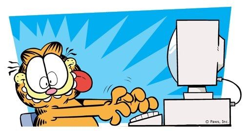
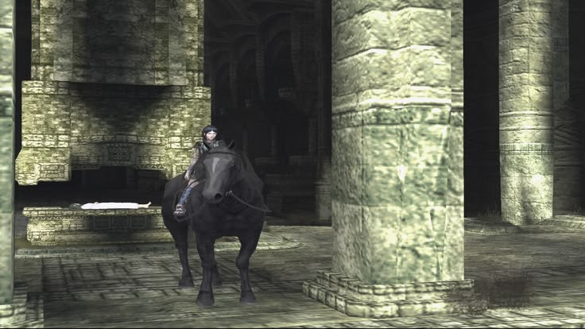
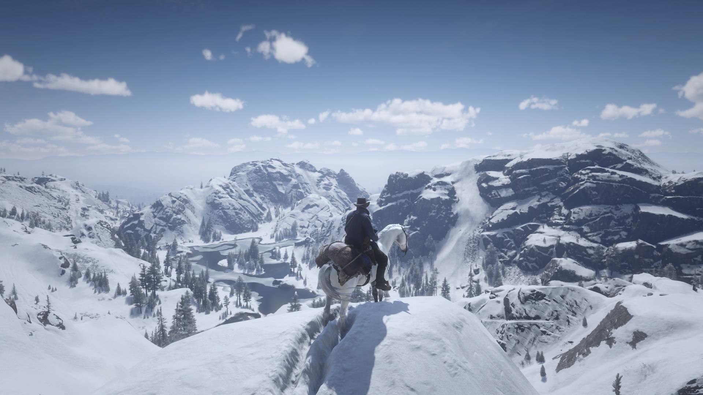
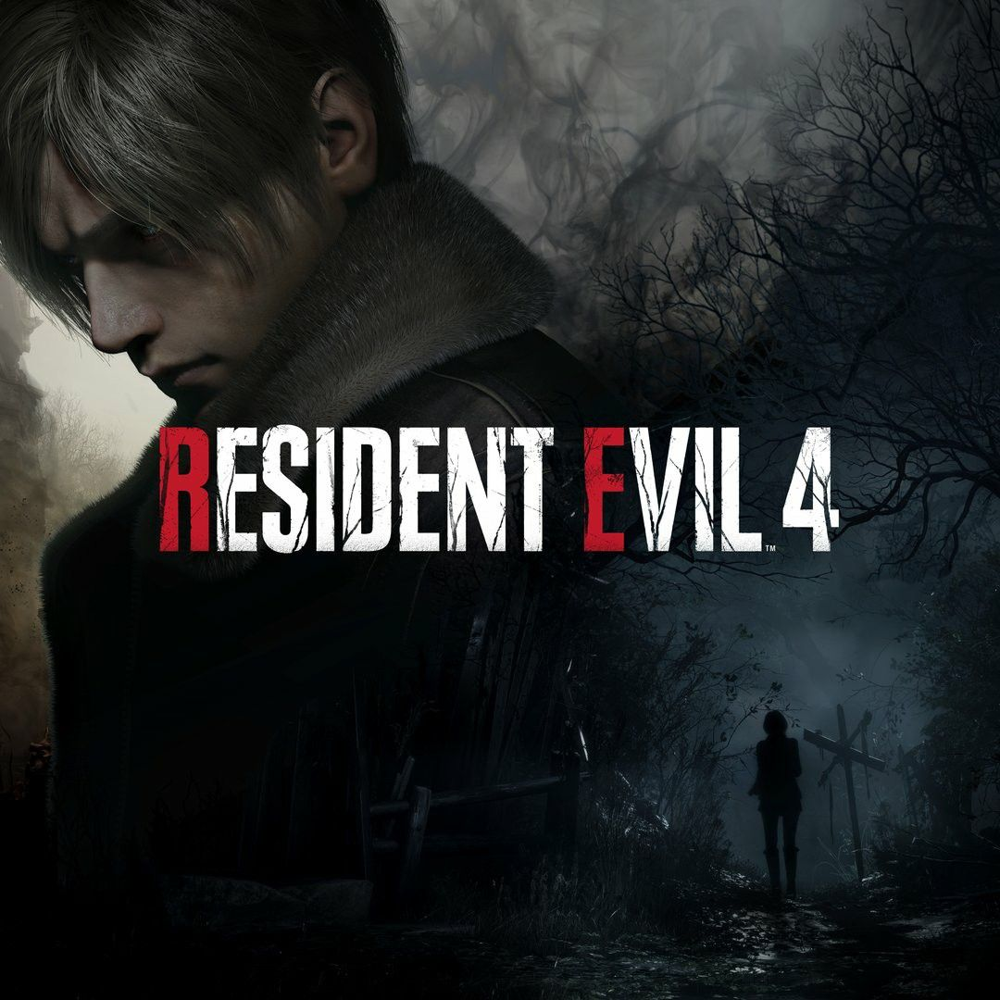
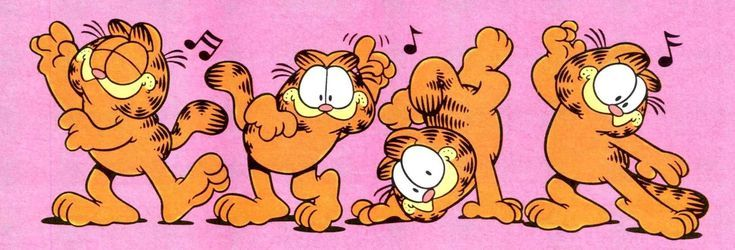
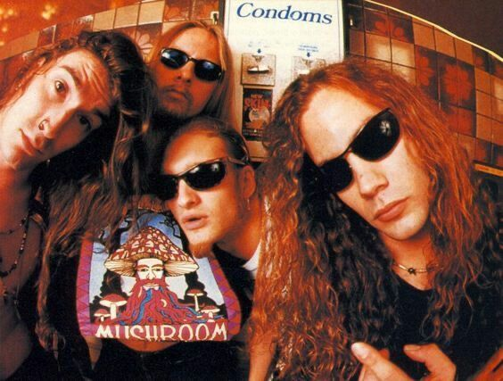
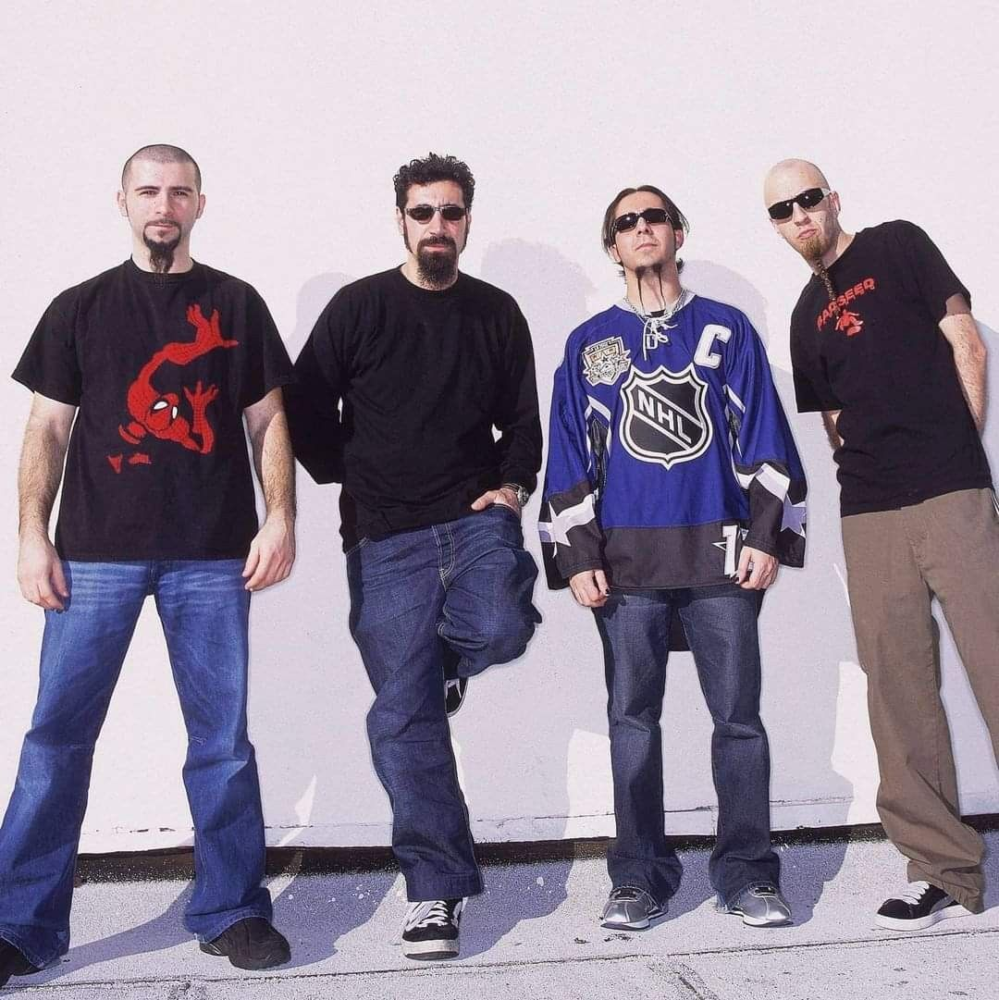
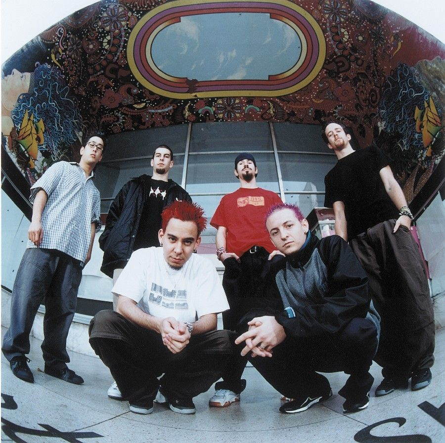

Três Jogos & Três Artistas
Jogos: Shadow of the Colossus | Red Dead Redemption II | Resident Evil 4 Remake
Artistas: Alice in Chains | System of a Down | Linkin Park
★ ⭑ Jogos ⭑ ★

✰ Shadow of the Colossus (2005, PlayStation 2)

Shadow of the Colossus, lançado no Japão como Wanda and the Colossus (ワンダと巨像Wanda to Kyozō ), é o segundo jogo da Team ICO e publicado pela Sony. Sendo um sucesso global, entrou para a categoria do "Greatest Hits" para jogos do PS2.
O jogo se concentra em um jovem, conhecido pelo público apenas como Wander (ou "o Andarilho"), que tem a missão de encontrar e matar dezesseis colossos que residem em uma vasta extensão de terra desolada, na esperança de ressuscitar uma garota sacrificada chamada Mono. Contando apenas com uma espada, um arco e flecha e sua fiel montaria, ele inicia sua exploração pelas terras inóspitas e inabitadas em busca das criaturas, cada uma com características e pontos fracos únicos e marcantes
Esse jogo foi um dos meus primeiros contatos com o mundo dos video-games, tendo jogado pela primeira vez quando eu tinha por volta de cinco ou seis anos - o fato de poder explorar um cenário aberto tão bonito com um cavalo me ganhou. Então, desde aquela época, sempre consumo conteúdos sobre o jogo - vídeos de curiosidades e explorações via mods, vídeos de análises e explicações. Foi e é uma paixão que existe até hoje, casualmente o revisito, tanto a versão original quanto o remake para Play Station 4, mesmo que eu ainda não tenha esquecido onde fica cada colosso ou quais as artimanhas para derrotá-los, segue sendo um dos jogos mais importantes e significantes para mim.
Clique aqui para retornar ao topo da página
✰ Red Dead Redemption II (2018, PlayStation 4)

Red Dead Redemption 2 (estilizado Red Dead Redemption II) é um jogo eletrônico de ação-aventura desenvolvido e publicado pela Rockstar Games. É o terceiro título da série Red Dead e uma prequela de Red Dead Redemption, tendo sido lançado em outubro de 2018 para PlayStation 4 e Xbox One e em novembro de 2019 para Microsoft Windows e Google Stadia. A história se passa em 1899 em uma representação ficcional do oeste, meio-oeste e sul dos Estados Unidos e acompanha o fora da lei Arthur Morgan, que precisa lidar com o declínio do Velho Oeste e sobreviver à perseguição de forças governamentais, gangues rivais e outros adversários.
"Estados Unidos, 1899. O fim da era do velho oeste começou. Depois de tudo dar errado durante um roubo em uma cidade do oeste chamada Blackwater, Arthur Morgan e a gangue Van der Linde são forçados a fugir. Com agentes federais e os melhores caçadores de recompensas no seu encalço, a gangue precisa roubar, assaltar e lutar para sobreviver no impiedoso coração dos Estados Unidos. Conforme divisões internas profundas ameaçam despedaçar a gangue, Arthur deve fazer uma escolha entre os seus próprios ideais e a lealdade à gangue que o criou."
Joguei red dead alguns anos depois de seu lançamento e, mesmo sabendo do principal plot da trama sobre o destino do protagonista, foi um jogo que me prendeu do início ao fim. É extremamente divertido de se explorar o mundo aberto, há várias opções de personalização, encontros aleatórios e missões cativantes. É possível até mesmo caçar e pescar durantes horas a fio, há vários colecionáveis e missões secundárias com recompensas interessantes. Um dos meus jogos favoritos até hoje, a história é absolutamente magnífica do início ao fim e o ritmo de construção dos eventos e dos comportamentos dos personagens é maravilhoso.
Clique aqui para retornar ao topo da página
✰ Resident Evil 4 Remake (2023, PlayStation 4)

Para o original de 2005, veja Resident Evil 4 (2005). Resident Evil 4, conhecido no Japão como BIOHAZARD RE:4 (バイオハザード RE:4 baiohazādo RE:4), é um jogo de survival horror desenvolvido pela Capcom Division 1. É um remake do jogo de mesmo nome lançado em 2005 e foi lançado em 24 de março de 2023.
"Seis anos se passaram desde o desastre biológico em Raccoon City . Leon S. Kennedy , um dos sobreviventes do incidente, foi recrutado como agente, reportando-se diretamente ao presidente dos Estados Unidos. Com a experiência de múltiplas missões, Leon é enviado para resgatar a filha sequestrada do presidente . Ele a rastreia até uma vila europeia isolada , onde algo terrivelmente errado acontece com os moradores. E assim começa esta história de resgate ousado e horror brutal."
RE4R foi um dos primeiros jogos que pude jogar menos de um ano após seu lançamento - o jogo lançou em março e consegui jogar em janeiro do ano seguinte, apenas 10 meses depois, uau - e foi também o meu primeiro contato real com a franquia, até então é claro que a conhecia, mas nunca havia tido vontade de realmente jogar algum dos jogos. O jogo tem gráficos belíssimos e as mecânicas de gameplay são ótimas, foi um excelente primeiro contato com a franquia, rejoguei em várias dificuldades e inúmeras vezes, até mesmo me influenciou a adquirir outros títulos como Resident Evil 2 Remake, Resident Evil 7 e Resident Evil 8.
Clique aqui para retornar ao topo da página
★ ⭑ Artistas ⭑ ★

✰ Alice in Chains

Alice in Chains é uma banda de heavy metal grunge norte-americana fundada pelo guitarrista e vocalista Jerry Cantrell e pelo baterista Sean Kinney em Seattle, Washington, no ano de 1987. O baixista Mike Starr e o vocalista Layne Staley se juntaram à banda em seguida. Mike Starr foi substituído por Mike Inez em 1993. William DuVall entrou na banda em 2006 assumindo o posto de Staley, que morreu em 2002, e dividindo os vocais com Cantrell. Essa formação da banda já lançou três álbuns.
Apesar de vastamente associada ao gênero grunge, o som da banda incorpora essencialmente elementos do heavy metal e do metal alternativo, produzindo um som mais acústico e pós-punk, além de algumas melodias de doom metal. A banda alcançou fama internacional como parte do movimento grunge do início dos anos 90, ao lado de Pearl Jam, Soundgarden e Nirvana, sendo uma das mais bem sucedidas comercialmente desta época, com mais de 14 milhões de álbuns vendidos nos Estados Unidos e cerca de 30 milhões vendidos em todo o mundo. A banda ainda teve dois álbuns na primeira posição da Billboard 200, Jar of Flies de 1994 e Alice in Chains de 1995, além de dezoito singles no Top 10 da parada Mainstream Rock Tracks da Billboard, e nove indicações ao Prêmio Grammy.
O Alice in Chains é uma das minhas bandas favoritas de toda a vida, desde que a conheci nunca mais deixei de ouvir nenhum dos álbuns e EP's, que, diga-se de passagem, são obras-primas da indústria musical. Para mim, a sonoridade da banda é um marco fenomenal dos anos 90 - diferentemente de seus contemporâneos do estilo grunge, que se inspiravam no punk, o Alice in Chains sempre se baseou em estilos mais pesados e sombrios do nu metal, dando uma personalidade única e extremamente característica a todas suas composições.
Algumas das minhas faixas favoritas são: Sunshine, Down in a Hole, Again e Nutshell.
Clique aqui para retornar ao topo da página
✰ System of a Down

System of a Down (também conhecida como SOAD ou simplesmente System) é uma banda de metal alternativo armênio-americana formada em Glendale, Califórnia, em 1994. Desde 1997, banda é composta pelo vocalista principal Serj Tankian, o guitarrista solo e vocalista Daron Malakian, o baixista Shavo Odadjian e o baterista John Dolmayan, que substituiu o baterista original Andy Khachaturian. Todos os membros do System of a Down têm ascendência armênia, sendo nascidos de imigrantes armênios ou sendo eles mesmos os imigrantes.
A banda alcançou sucesso comercial com o lançamento de cinco álbuns de estúdio, sendo que três estrearam no topo da parada Billboard 200. O System of a Down foi indicado para quatro prêmios Grammy, e sua música "B.Y.O.B." ganhou um Grammy Award de Melhor Performance de Hard Rock em 2006. A banda entrou em hiato em 2006 e se reuniu em 2010. A banda vendeu mais de 12 milhões de discos em todo o mundo, enquanto dois de seus singles, "Aerials" e "Hypnotize", alcançaram o primeiro lugar na parada Alternative Songs da Billboard.
Já conhecia a banda desde ciança, mas até alguns anos atrás nunca havia realmente gostado de nenhuma música, até que um dia, ouvindo uma playlist pronta do Spotify me deparei com uma música simplesmente sensacional que na hora me despertou atenção. Abrindo o aplicativo para ver quem cantava aquela melodia e tocava os instrumentais eletrizantes, me deparei com um velho nome há muito tempo desgostado. Com isso, resolvi dar uma chance à banda e ouvi todos os álbuns em ordem. E acabei amando praticamente todos eles. Desde então, o SOAD está sempre nas minhas playlists.
Algumas das minhas faixas favoritas são: Suite-Pee, Chop-Suey, Ego Brain e Needles.
Clique aqui para retornar ao topo da página
✰ Linkin Park

Linkin Park é uma banda de rock dos Estados Unidos formada em Agoura Hills, Califórnia. A formação atual do grupo inclui o vocalista e multi-instrumentista Mike Shinoda, o guitarrista Brad Delson, o baixista Dave Farrell, o DJ Joe Hahn, a vocalista Emily Armstrong e o baterista Colin Brittain. A formação da banda em seus sete primeiros álbuns de estúdio incluía o vocalista Chester Bennington e o baterista Rob Bourdon; após a morte de Bennington em julho de 2017, o grupo passou por um hiato de sete anos, período durante o qual Bourdon optou por deixar a banda. Em setembro de 2024, Linkin Park retornou as atividades com as adições de Armstrong e Brittain.
Linkin Park está entre as bandas mais bem-sucedidas do século XXI e de todos os tempos, tendo vendido mais de 100 milhões de álbuns em todo o mundo. Eles ganharam dois Grammy Awards, sete American Music Awards, quatro Billboard Music Awards, quatro MTV Video Music Awards, dez MTV Europe Music Awards e três World Music Awards. Em 2003, a MTV2 nomeou o Linkin Park como a sexta maior banda da era dos videoclipes e a terceira melhor do novo milênio. Em 2012, a banda foi votada como o maior artista dos anos 2000 em uma pesquisa realizada pela VH1. Em 2014, a banda foi declarada como "a maior banda de rock do mundo" pela Kerrang!.
Por ser uma das bandas mais conhecidas em todo o mundo, o Linkin Park foi uma das minhas portas de entrada para o gênero musical do rock. Comecei a ouvir as músicas por volta dos 10 ou 11 anos e até hoje é uma das minhas bandas favoritas, tendo me acompanhado durante muitos anos. De tempos em tempos, revisito alguns álbuns e músicas que não escutava há algum tempo e a sensação de deslumbre por ouvir algo tão bem produzido permanece a mesma.
Algumas das minhas faixas favoritas são: Lying From You, Papercut, Figure.09 e What I've Done.
Clique aqui para retornar ao topo da página